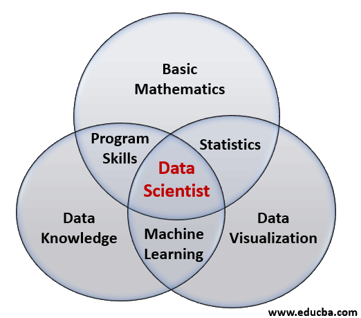

计算·社会科学
星火茶话会
胡悦
清华大学社会科学学院政治学系
副教授
2023-05-01
个人简介
个人经历
- 政治科学博士（University of Iowa)
- 信息学（Graduated Certificate in Informatics)
- 清华大学计算社会科学平台(副主任)
- 清华数据与治理中心(副主任)
- Learning R with Dr. Hu and His Friends
研究特点：现代性与学科交叉
- W. 计量与数据科学
- 实验室和调查实验
- 潜变量分析、网络分析、空间分析
- 文本大数据分析、数据可视化等
研究领域
- W. 心理学
- 记忆政治（参与、公卫）
- 政治传播（官媒、青年）
- 身份认知（城乡、香港、司法）
- W. 经济学
- 宏观经济 → 微观认知 → 中观行为公共政策
- 社会经济不平等
- W. 语言学
- 语言能力的政治影响
- 语言政策的治理功能
概述
- 新时代数据观
- 四个迷思
- 成为计算社会科学家
新时代数据管
（大）数据的战略价值
大数据发展日新月异，我们应该审时度势、精心谋划、超前布局、力争主动，深入了解大数据发展现状和趋势及其对经济社会发展的影响，分析我国大数据发展取得的成绩和存在的问题，推动实施国家大数据战略，加快完善数字基础设施，推进数据资源整合和开放共享，保障数据安全，加快建设数字中国，更好服务我国经济社会发展和人民生活改善。
——习近平 (《中共中央政治局第二次集体学习》, 2017年
（大）数据的战略价值1
| 排他 | 非排他 | |
|---|---|---|
| 竞争 | 私有产品： 食物、石油、普通制成品、私人池塘里的鱼等。 |
公共资源： 森林、矿山、海洋中的鱼等。 |
| 非竞争 | 俱乐部产品： 卫星电视、私人公园等。 数据 |
公共产品： 国防、航空、阳光、新闻等。 |
- 估值困境
- 管理困境
计算社会科学迷思
关于计算社会科学的三个迷思
- 数据量迷思
- 抽样迷思
- 方法迷思
数据量迷思
“每日上亿条”
“全网数据”
“《人民日报》所有文章”
大数据不是全数据
全数据不一定是好数据
抽样迷思
为了系统地描述他们的观点，我们从2010年到2015年的社交媒体帖子中获取了一个随机样本…… 从这些数据中，我们.red[抽取了]128个帖子，这些帖子是由人们……— King、Pan和Roberts 2017年《美国政治科学评论》（APSR）
该分析仅限于.red[随机样本]的推文，我们收集了手工标注的数据…… — Cirone和Hobbs 2022年《政治科学研究方法》（PSRM）
- 简单和复杂抽样是否适用于政务大数据？
- 抽样偏差、数据来源冲突、波动增加、误差率…
- “Let data talk”?

方法迷思
调研都是主观数据，靠不住。大数据是客观数据，更能反映人类行为规律。
大数据研究有全数据，数据可视化已经能够体现规律
大数据都是描述数据，没法进行因果推断
学习迷思
典型对话：
负责人：我想在项目中使用大数据方法。我应该怎么做？
顾问：去学Python吧！！
成为计算社会科学家
知识基础
操作基础
Python > R
- API ports
- Automation tools
- Commercial usage
R > Python
- Analysis
- Visualization
- Ecology
认知基础


小结
- 新时代数据观
- 战略价值
- 四个迷思
- 数据量迷思
- 抽样迷思
- 方法迷思
- 学习迷思
- 成为计算社会科学家
- 知识基础
- 操作基础
- 认知基础